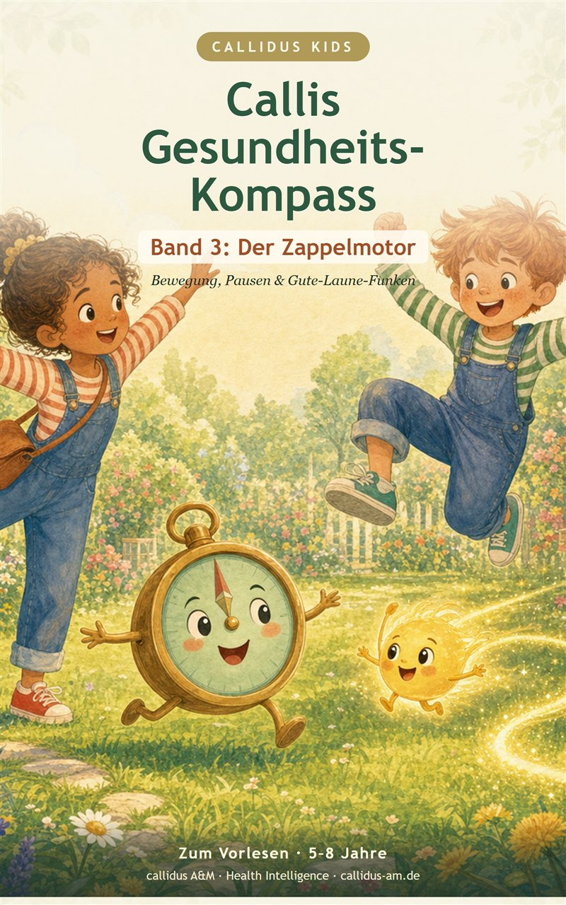
Für alle Kinder, deren Beine unter dem Tisch heimlich schon losrennen wollen. (Das ist völlig richtig so.)
Mit Calli, Mira, Noah — und Flitz, dem Gute-Laune-Funken.
Dein Körper ist nicht zum Stillsitzen gebaut. Er ist ein kleiner, fröhlicher Motor, der gern läuft.
Wenn deine Beine zappeln, ist das kein Fehler — das ist Energie, die raus möchte.
Bewegung macht dich stärker, wacher und fröhlicher. Und das Beste: Bewegung ist kein Wettkampf.
Du musst nicht die Schnellste sein oder der Weiteste springen. Du darfst einfach loslegen — auf deine Weise.
Dieses Buch macht aus Bewegung keine Pflichtübung und keinen Leistungssport. Es zeigt Bewegung als das, was sie für Kinder ist: Freude, Energie und gute Laune. Kein Kind muss sich für Zappeln, Tempo oder Ungeschick schämen. Jeder Körper bewegt sich anders — und jede Bewegung zählt.
Drei Fragen helfen beim Vorlesen: Worauf hättest du gerade Lust? Wie fühlt sich dein Körper nach dem Bewegen an? Und: Wollen wir kurz zusammen etwas ausprobieren? So entsteht Lust statt Druck.
Noah saß am Tisch und sollte ganz ruhig sitzen. Er schaffte es ungefähr vier Sekunden.
Dann wippten seine Füße. Erst leise. Dann schneller. Dann so sehr, dass der Stuhl aussah, als wolle er verreisen.
„Meine Beine haben eine eigene Meinung", sagte Noah.
Calli rollte heran und lächelte. „Das kenne ich. In dir steckt ein Zappelmotor. Und der sagt gerade sehr deutlich: Lass mich raus."
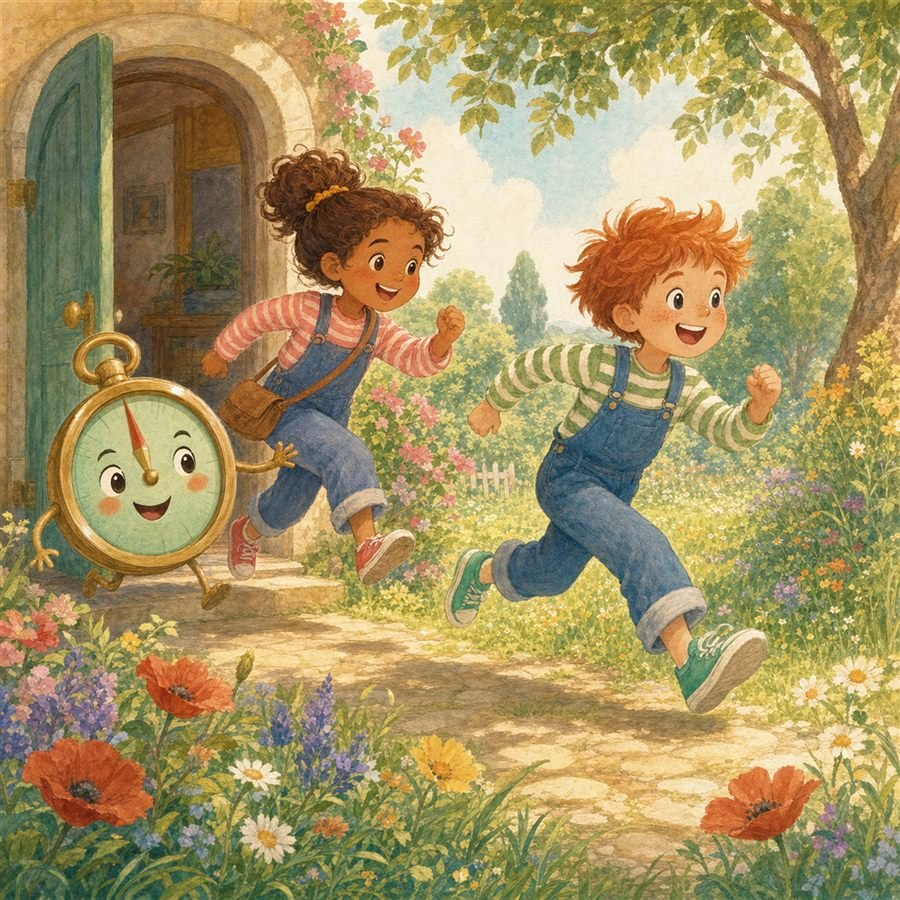
„Und wie mache ich den Ausgang auf?", fragte Noah.
„Ganz einfach", sagte Calli. „Tür auf, Beine an."
Noah rannte in den Garten wie ein Pfeil, der vergessen hatte, wohin er wollte. Mira hüpfte hinterher.
Und auf einmal war die Zappel-Unruhe weg — sie war einfach in Rennen verwandelt worden.
„Siehst du?", rief Calli. „Dein Zappelmotor wollte nur fahren."
Callis Schlau-Seite
Zappeln ist oft Energie, die raus möchte — kein Fehler.
Kinder brauchen jeden Tag eine gute Portion Bewegung, am liebsten über den Tag verteilt.
Bewegung muss nicht anstrengend aussehen: rennen, hüpfen, klettern, tanzen — alles zählt.
Nach dem Bewegen kann man sich oft besser konzentrieren.
Callis Satz für dieses Kapitel
Dein Zappelmotor will fahren — lass ihn.
Mitmach-Kompass
Merkst du gerade Zappel-Energie in den Beinen?
Steh auf.
Mach zehn schnelle Hampelmänner. Oder renn einmal um den Tisch.
Und jetzt spür nach: Ist die Unruhe kleiner geworden?
„Meine Beine sind zufriedener", sagte Noah. „Dann hat der Motor eine Runde gedreht", sagte Calli.
Bewegungsdrang ist bei Kindern normal und gesund — kein Zeichen von Ungezogenheit.
Hilfreich ist, Bewegung einzuplanen statt zu verbieten: kurze Toberunden, Bewegungspausen, der Weg zu Fuß. Wer viel sitzen muss, dem hilft schon ein kurzer Wechsel. Vor konzentrierten Aufgaben wirkt eine kleine Bewegungsrunde oft Wunder.
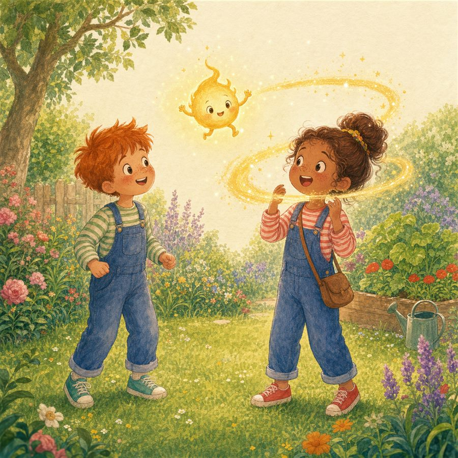
Beim Toben passierte etwas Merkwürdiges: Um Noah herum begann es zu funkeln. Aus den Funken wurde ein kleiner, goldener Wirbel mit einem fröhlichen Gesicht.
„Hallihallo!", rief er und zischte einmal um Miras Kopf. „Ich bin Flitz. Ich bin ein Gute-Laune-Funke!"
„Woher kommst du?", staunte Mira.
„Aus euch!", lachte Flitz. „Immer wenn ihr euch bewegt, mache ich mich auf den Weg."
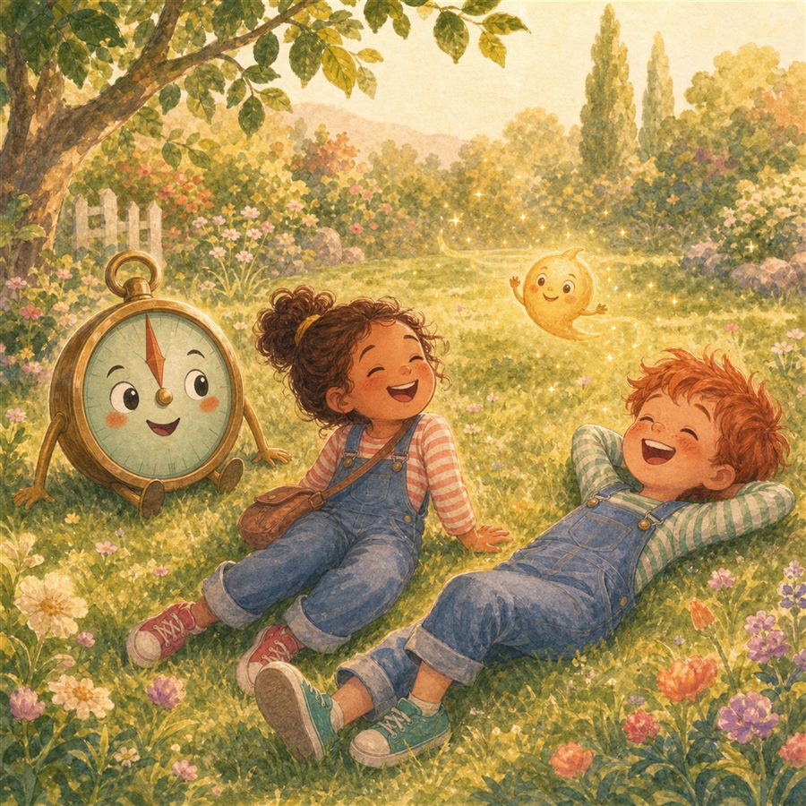
Nach einer Weile ließen sich alle ins Gras fallen, außer Puste und lachend.
„Komisch", sagte Noah. „Ich bin müde und trotzdem richtig gut gelaunt."
„Das sind wir!", rief Flitz und wirbelte fröhlich. „Beim Bewegen macht dein Körper Gute-Laune-Funken. Die sorgen dafür, dass du dich hinterher leichter und froher fühlst."
Mira grinste. „Also ist Toben so etwas wie eine Laune-Dusche?" — „Ganz genau", sagte Flitz. „Nur ohne nass werden."
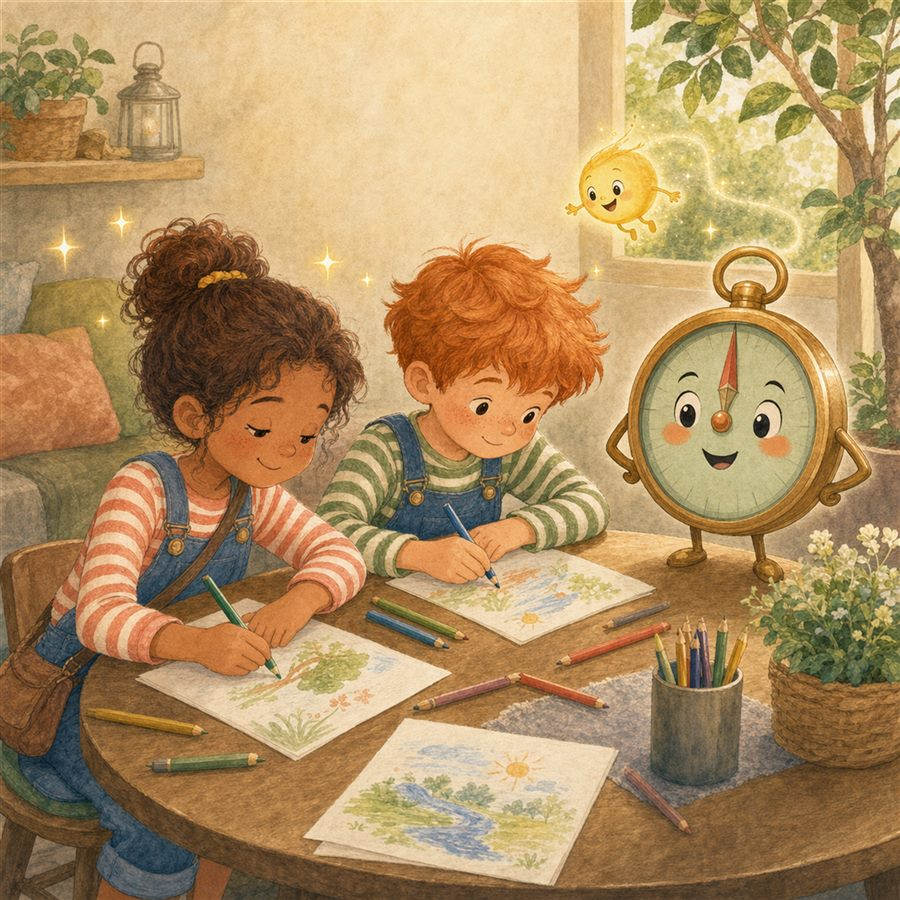
Später setzten sie sich hin, um ein Bild zu malen.
„Komisch", sagte Mira. „Mein Kopf fühlt sich klarer an als vorhin."
„Auch das kommt vom Bewegen", sagte Calli. „Nach dem Toben kann dein Kopf oft besser denken und sich besser konzentrieren. Deine Beine sind heimliche Kopf-Helfer."
Flitz nickte eifrig. „Erst toben, dann Hausaufgaben — das ist kein Trick, das ist Wissenschaft."
Callis Schlau-Seite
Beim Bewegen schüttet dein Körper Botenstoffe aus, die die Stimmung heben (die Gute-Laune-Funken).
Deshalb fühlt man sich nach dem Toben oft leichter und fröhlicher.
Auch bei schlechter Laune kann eine kleine Bewegungsrunde helfen.
Nach dem Bewegen fällt Konzentrieren oft leichter.
Callis Satz für dieses Kapitel
Wenn innen alles festklebt, hilft oft ein bisschen Bewegung.
Mitmach-Kompass
Wie fühlst du dich gerade — auf einer Skala von müde bis munter? Merk dir die Zahl.
Jetzt tanz zu deinem Lieblingslied. Oder hüpf eine Minute.
Wie fühlst du dich jetzt?
Sind ein paar Gute-Laune-Funken dazugekommen?
„Ich war bei drei und bin jetzt bei sieben", sagte Noah. „Funken wirken", sagte Flitz stolz.
Bewegung ist einer der freundlichsten Stimmungs- und Konzentrationshelfer, die Kinder haben.
Statt bei Unruhe oder Frust sofort zu ermahnen, hilft oft eine kurze Bewegungsrunde. Vor Hausaufgaben, nach langem Sitzen oder bei mieser Laune: erst bewegen, dann weitermachen. Ganz ohne Leistungsanspruch.
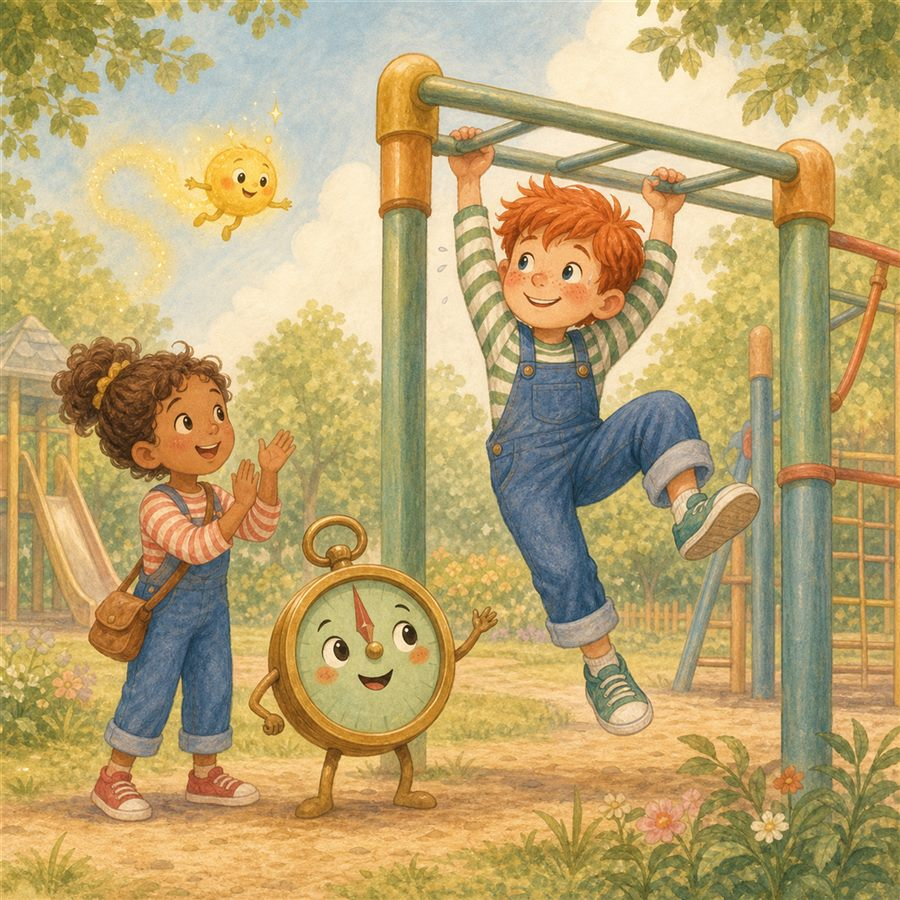
Noah hangelte sich am Klettergerüst entlang und schnaufte. „Meine Arme werden ganz warm."
„Das sind deine Muskeln bei der Arbeit", sagte Calli. „Jedes Mal, wenn du sie benutzt, denken sie: Oho, wir werden gebraucht — und bauen ein bisschen mehr Kraft auf."
„Meine Muskeln bauen?", fragte Noah.
„Wie fleißige kleine Handwerker", sagte Calli. „Und je öfter du kletterst, hüpfst und trägst, desto mehr Werkzeug haben sie."
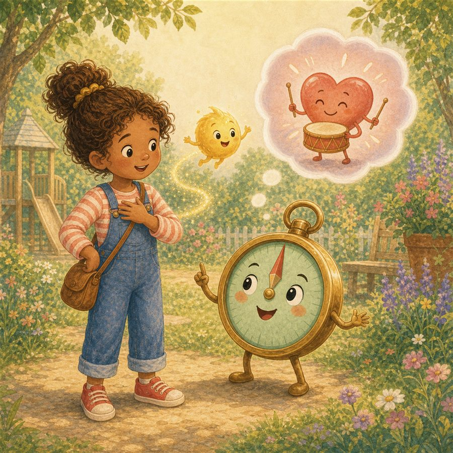
Nach dem Rennen legte Mira die Hand auf die Brust. „Mein Herz klopft ganz schnell. Ist das schlimm?"
„Überhaupt nicht", sagte Calli. „Dein Herz ist auch ein Muskel. Beim Bewegen trommelt es schneller, um Blut und Sauerstoff dorthin zu bringen, wo dein Körper gerade mehr braucht."
„Also trainiert mein Herz beim Toben mit?", fragte Mira.
„Jeden Tag ein bisschen", sagte Calli. „Ein fleißiger kleiner Trommler."
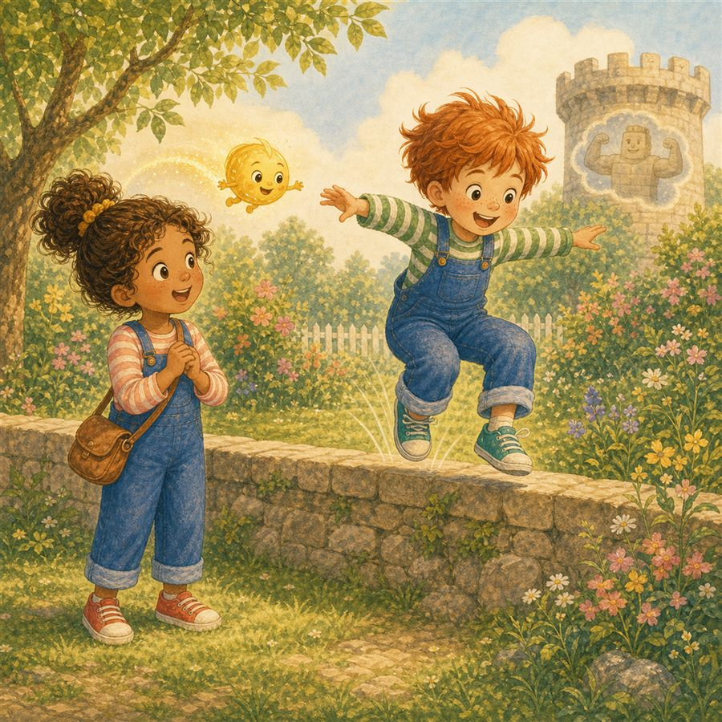
Noah sprang immer wieder vom kleinen Mäuerchen. „Warum hüpfst du so gern?", fragte Mira.
„Weil es Spaß macht", sagte Noah. „Und weil es hilft", ergänzte Calli. „Hüpfen und Springen sagt deinen Knochen: Werdet fest wie ein Ritterburg-Turm. So bleiben sie stark."
„Meine Knochen bauen eine Burg?", lachte Noah und sprang noch einmal.
„Eine sehr stabile", sagte Calli.
Callis Schlau-Seite
Muskeln werden kräftiger, wenn du sie benutzt — beim Klettern, Tragen, Rennen.
Dein Herz ist ein Muskel und trainiert beim Bewegen mit.
Hüpfen und Springen machen die Knochen fest und stabil.
Stark wird man nicht an einem Tag, sondern durch viele kleine Male.
Callis Satz für dieses Kapitel
Muskeln, Herz und Knochen lieben Arbeit — und Pausen danach.
Mitmach-Kompass
Bärenstark: geh zehn Schritte im Bärengang auf Händen und Füßen.
Hüpf-Burg: hüpf zehnmal so hoch du kannst.
Trage-Held: trag etwas Schweres (aber nicht zu Schweres) einmal durchs Zimmer.
Herz-Check: leg danach die Hand auf die Brust — spürst du den Trommler?
„Mein Trommler trommelt", sagte Noah. „Dann hat die Runde gewirkt", sagte Calli.
Kinder brauchen kein Krafttraining — sie brauchen vielfältiges Spielen: klettern, hangeln, hüpfen, tragen, balancieren.
Das stärkt Muskeln, Herz und Knochen ganz nebenbei. Wichtig ist Abwechslung und Freude, nicht Wiederholungszahlen. Spielplätze, Treppen und Toberunden sind das beste „Fitnessstudio".
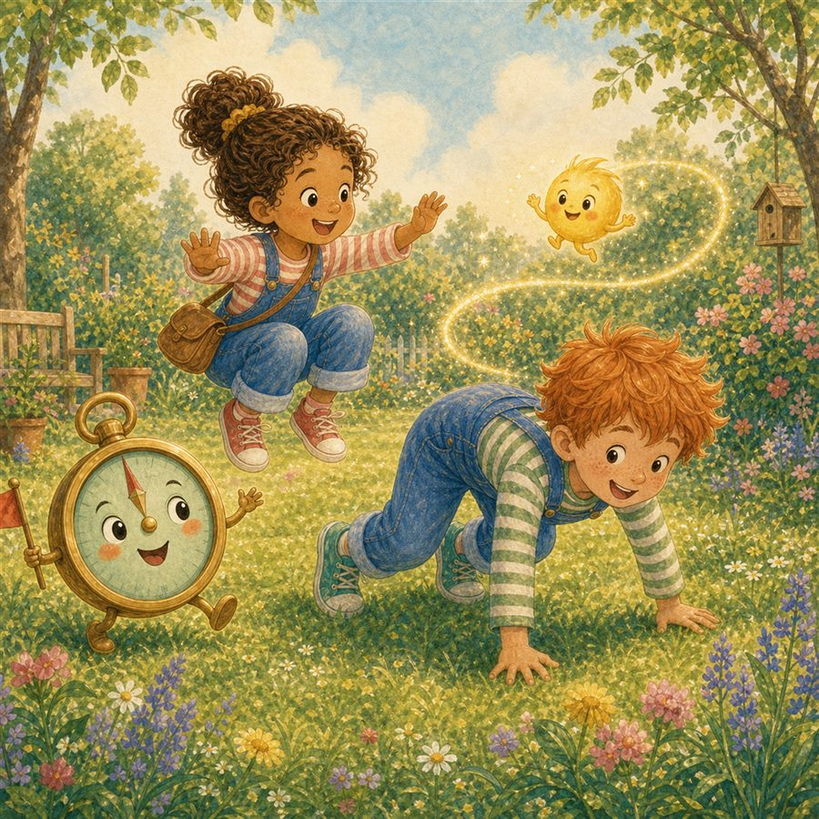
„Zeit für die Tier-Olympiade!", rief Flitz und wirbelte im Kreis. „Was ist das?", fragte Mira.
„Bewegen wie die Tiere", sagte Calli. „Erste Disziplin: der Froschsprung."
Alle gingen in die Hocke und sprangen — quak, quak, quak — durch den Garten. Danach tapsten sie im Bärengang über die Wiese, schwer und gemütlich.
„Ich bin ein sehr müder Bär", schnaufte Noah. „Ein sehr sportlicher", sagte Calli.
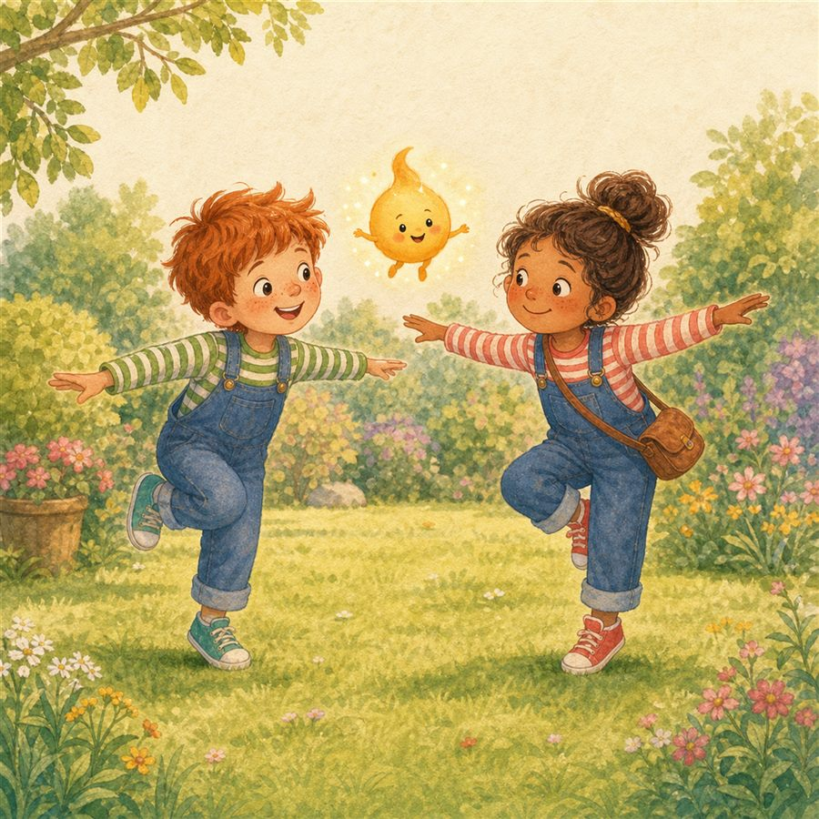
„Nächste Disziplin: der Flamingo", sagte Calli. Alle stellten sich auf ein Bein.
Mira stand ruhig wie eine Statue. Noah wackelte, ruderte mit den Armen und kippte langsam zur Seite.
„Balance ist auch Bewegung", lachte Calli. „Und sie wird besser, je öfter du übst."
„Dann übe ich den Wackel-Flamingo", sagte Noah und stellte sich noch einmal hin.
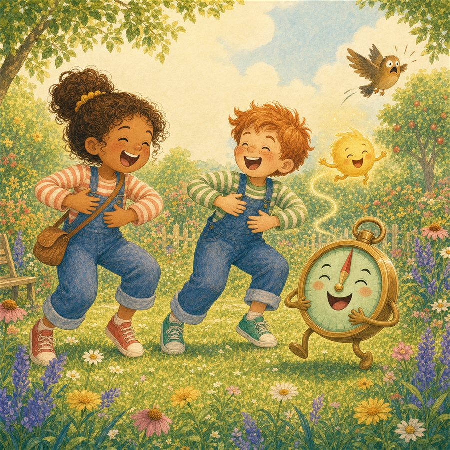
„Große Finaldisziplin: der Gorilla", rief Flitz. Alle trommelten sich auf die Brust und machten ihr bestes Dschungel-Geräusch.
„UGGA-UGGA!", brüllte Noah so laut, dass ein Vogel erschrocken davonflog.
Sie lachten, bis ihnen die Bäuche wehtaten.
„Wisst ihr", sagte Calli und wischte sich eine Freudenträne weg, „Lachen ist auch Bewegung. Es turnt sogar deine Bauchmuskeln."
Callis Schlau-Seite
Rennen und Hüpfen bringen Herz und Atmung in Schwung.
Balancieren (wie der Flamingo) übt Gleichgewicht und Geschick.
Klettern und Hangeln machen stark.
Und Lachen? Das turnt sogar deine Bauchmuskeln.
Callis Satz für dieses Kapitel
Es gibt kein „richtiges" Bewegen — es gibt nur dein Bewegen.
Mitmach-Kompass
Froschsprung: fünfmal klein in die Hocke und hüpfen.
Bärengang: einmal auf Händen und Füßen durch den Raum.
Flamingo: auf einem Bein stehen und bis zehn zählen.
Gorilla: auf die Brust trommeln und lachen.
Erfinde ein eigenes Tier und mach seine Bewegung nach!
„Ich bin ein Hüpf-Krokodil", sagte Noah. „Neue Disziplin anerkannt", sagte Calli.
Bewegung soll Spaß machen, nicht bewertet werden. Kinder bewegen sich unterschiedlich schnell, mutig und geschickt — und das ist völlig in Ordnung.
Vergleiche und Wettkampfdruck nehmen die Freude. Loben Sie das Mitmachen und die Freude, nicht die Leistung. Wer lacht, bewegt sich gleich doppelt gern.
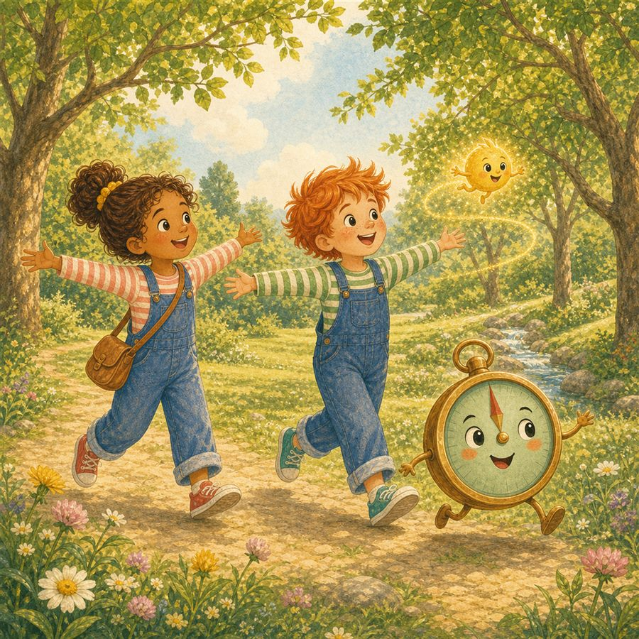
Am Nachmittag gingen alle nach draußen. Die Luft roch nach Gras, die Sonne wärmte, und irgendwo summte eine Biene.
„Draußen bewegt es sich am schönsten", sagte Calli. „Frische Luft, Platz zum Rennen und Licht für gute Laune."
Flitz zischte glücklich zwischen den Bäumen hindurch. „Draußen habe ich am meisten Platz zum Funkeln!"
Noah breitete die Arme aus. „Hier ist mein Zappelmotor am liebsten."
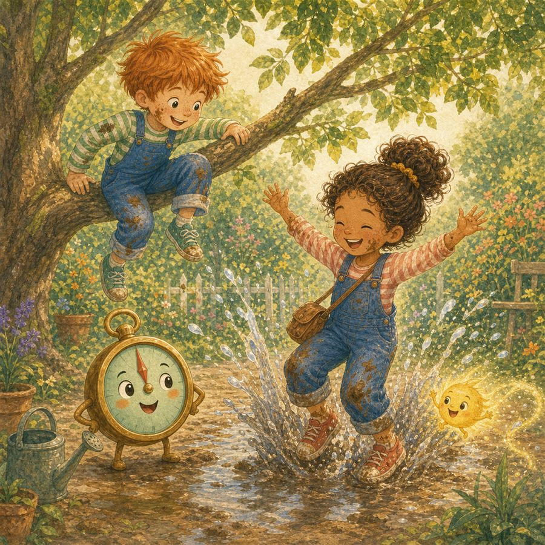
Noah kletterte auf einen niedrigen Baumast. Mira sprang mit einem großen Platsch in eine Pfütze.
„Igitt?", fragte Calli. „Igitt-schön!", rief Mira und sprang noch einmal.
„Draußen darf man auch mal matschig werden", sagte Calli. „Klettern übt Mut und Geschick, und eine Pfütze ist fast schon Sport."
Flitz funkelte im Spritzwasser. „Und sie macht die allerbesten Funken!"
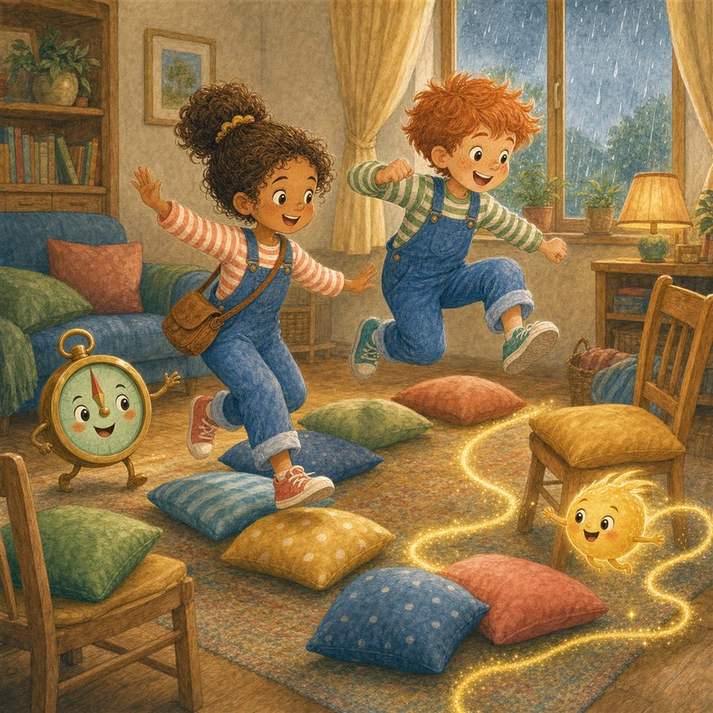
Am nächsten Tag regnete es. „Fällt die Bewegung heute aus?", fragte Noah traurig.
„Niemals", sagte Calli. „Bei Regen tanzt man drinnen. Und wer eine Regenjacke hat, darf sogar draußen durch Pfützen springen."
Also tanzten sie in der Küche, hüpften über Kissen und bauten einen Bewegungs-Parcours durch die Wohnung.
„Mein Zappelmotor ist wetterfest", lachte Noah.
Callis Schlau-Seite
Frische Luft und Tageslicht heben die Stimmung und helfen abends beim Einschlafen.
Draußen gibt es mehr Platz zum Rennen, Klettern und Toben.
Ein bisschen matschig werden gehört dazu — das ist kein Problem, sondern Abenteuer.
Und bei Regen? Dann bewegt man sich eben drinnen oder mit Regenjacke.
Callis Satz für dieses Kapitel
Es gibt kein schlechtes Wetter — nur unterschiedliche Bewegungs-Ideen.
Mitmach-Kompass
Geh nach draußen (oder ans offene Fenster).
Finde etwas, worauf du (sicher) balancieren kannst.
Finde etwas, das du umrunden kannst — im Laufschritt.
Finde etwas Schönes und bleib kurz stehen, um es anzuschauen.
„Ich bin um den ganzen Baum gerannt", sagte Noah. „Entdeckt und bewegt", sagte Calli.
Draußenzeit ist für Kinder wertvoll: mehr Bewegungsraum, Tageslicht (gut für die innere Uhr) und Naturerlebnis.
Es muss kein Programm sein — ein Spielplatz, ein Park, der Garten oder der Schulweg zu Fuß genügen. Und an Regentagen tut es auch eine Tanz- oder Toberunde drinnen. Matsch wäscht sich ab.
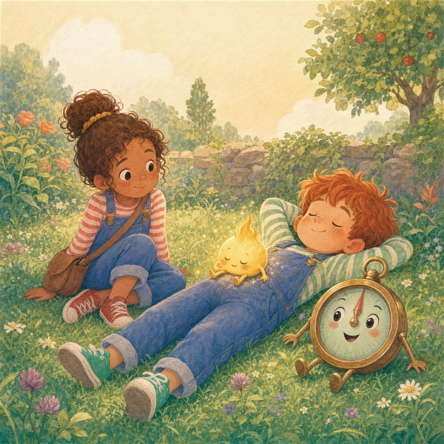
Nach der Tier-Olympiade lag Noah platt im Gras. „Meine Beine sind leer", stöhnte er.
„Dann haben sie gut gearbeitet", sagte Calli. „Pausen gehören zum Bewegen dazu. Wer tobt, darf ausruhen."
Flitz ließ sich ganz sanft auf Noahs Bauch nieder und glühte nur noch leise.
„Sogar ich mache mal langsam", gähnte er. „Ein Funke muss auch mal blinzeln."
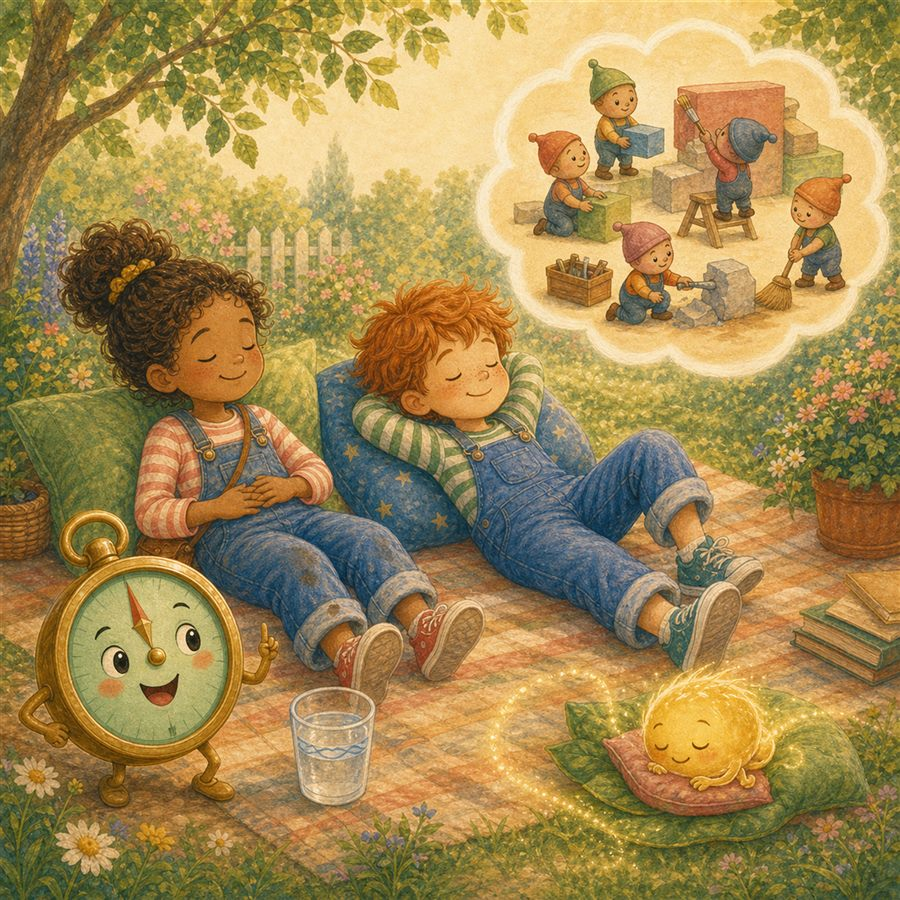
„Werden meine Muskeln jetzt schwächer, wenn ich liege?", fragte Noah.
„Im Gegenteil", sagte Calli. „Muskeln werden nicht beim Toben stärker, sondern danach — in der Pause. Da bauen die kleinen Handwerker in aller Ruhe um."
„Also ist Ausruhen ein Teil vom Starkwerden?", fragte Mira.
„Ein sehr wichtiger", sagte Calli. „Bewegung und Pause sind ein Team, wie Ein- und Ausatmen."
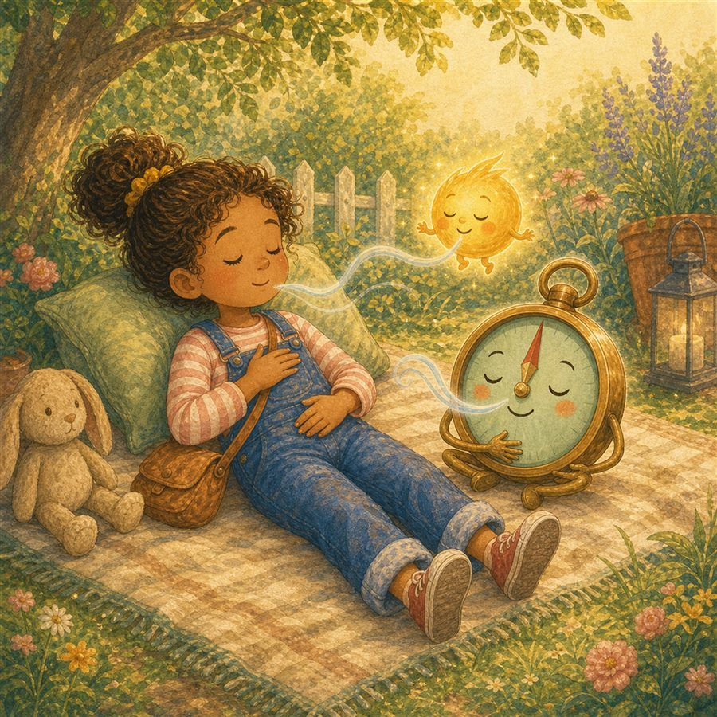
Manchmal ist nach dem Toben alles noch ganz aufgedreht. „Mein Herz rast und mein Kopf ist noch ganz zappelig", sagte Mira.
„Dann kommt der Ruhe-Atem", sagte Calli und legte sich flach hin. „Einatmen — die Schultern werden weich. Ausatmen — der Bauch darf loslassen. Noch einmal."
Mira atmete mit. Flitz wurde langsamer und leuchtete ruhig.
„Jetzt fühlt es sich an wie nach einem warmen Bad", sagte Mira.
Callis Schlau-Seite
Muskeln werden vor allem in der Pause stärker — beim Ausruhen wird umgebaut.
Nach dem Toben tut Trinken und eine kleine Ruhe gut.
Wenn man ganz aufgedreht ist, hilft ruhiges Atmen beim Runterkommen.
Bewegung und Pause sind ein Team — wie Ein- und Ausatmen.
Callis Satz für dieses Kapitel
Wer sich gut bewegt, darf sich auch gut ausruhen.
Mitmach-Kompass
Setz oder leg dich bequem hin.
Atme langsam ein und zähl dabei bis vier.
Atme langsam aus und zähl bis vier.
Spür, wie die Schultern weich werden.
Mach das dreimal — ganz ohne Eile.
„Mein Zappelmotor steht jetzt im Leerlauf", sagte Noah. „Perfekt geparkt", sagte Calli.
Auf viel Bewegung darf viel Ruhe folgen — beides gehört zusammen.
Kinder kommen nach Aufregung nicht immer allein herunter; ruhige Rituale, gemeinsames Atmen oder eine kurze Kuschelpause helfen. Achten Sie auch auf Trinken nach dem Toben. Ein gutes Wechselspiel aus Bewegung und Pause ist gesünder als beides im Übermaß.
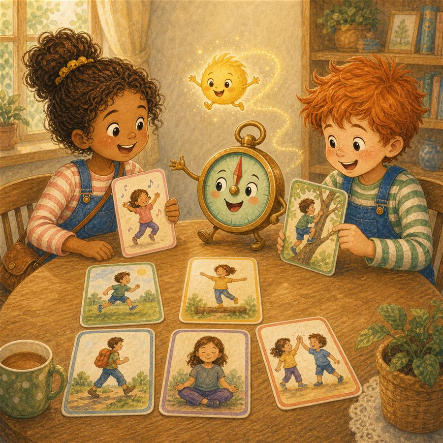
Am Sonntag legte Calli sieben bunte Karten auf den Tisch. „Der Bewegungs-Kompass", sagte er. „Keine Regeln. Nur kleine Ideen zum Ausprobieren."
Auf den Karten stand nichts Kompliziertes: draußen toben, tanzen, klettern, balancieren, zu Fuß gehen, eine Pause machen, gemeinsam bewegen.
Mira nahm die Tanz-Karte. Noah nahm die Kletter-Karte. Und Flitz? Flitz nahm einfach alle sieben und funkelte begeistert.
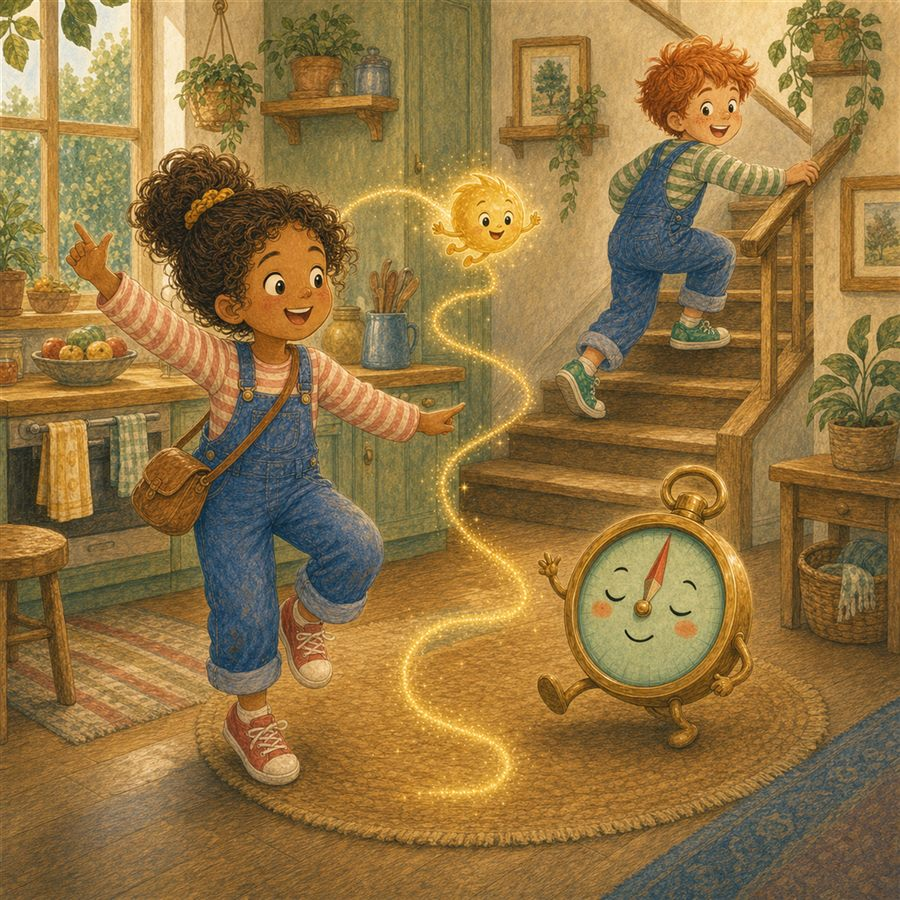
In der Woche probierten alle ihre Karte aus. Mira tanzte jeden Morgen ein Lied lang in der Küche. Noah nahm die Treppe statt des Aufzugs und zählte die Stufen. Und einmal machten sie ein Fangen-Spiel, bei dem sogar Calli mitrollte (er war überraschend schnell).
„Habt ihr gemerkt?", fragte Calli. „Bewegung muss nicht Sport heißen. Sie kann einfach im Tag stecken."
„Wie kleine Funken überall", sagte Flitz.
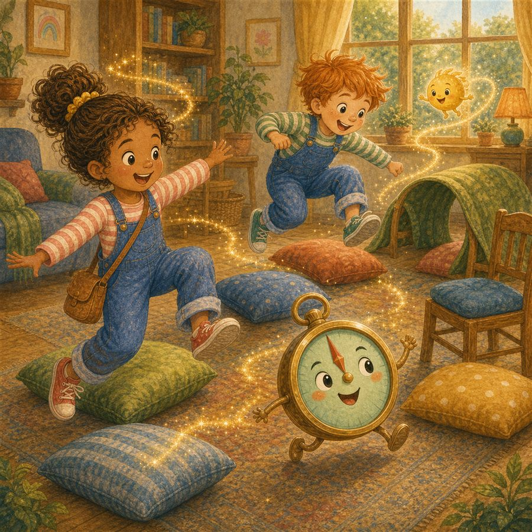
Am liebsten bewegten sich alle zusammen. Sie spielten Verstecken im Garten, machten ein Tanz-Battle im Wohnzimmer und bauten einen Hindernis-Parcours aus Kissen und Stühlen.
„Zusammen macht Bewegung am meisten Spaß", sagte Mira.
„Und die meisten Funken", ergänzte Flitz und wirbelte durch die Luft, dass es nur so glitzerte.
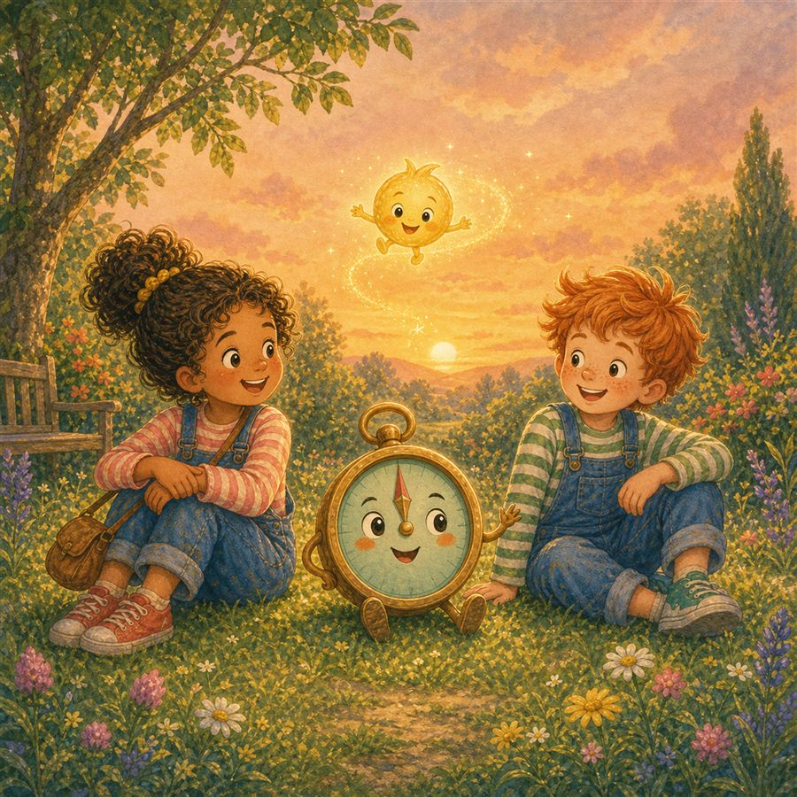
Am Ende der Woche saßen alle im Gras und schauten in den Abendhimmel. „Ihr habt viel gelernt", sagte Calli. „Was denn?", fragte Noah.
Mira zählte auf: „Mein Körper will sich bewegen. Bewegung macht stark, wach und gute Laune. Jede Bewegung zählt. Und Pausen gehören dazu."
„Damit seid ihr offiziell", sagte Calli feierlich. „Bewegungs-Helden."
Flitz funkelte stolz. „Meine liebsten Helden."
1. Was bedeutet Zappeln oft? (a) Ungezogenheit (b) Energie, die raus möchte (c) Hunger
2. Was sind Gute-Laune-Funken? (a) Glücks-Botenstoffe beim Bewegen (b) echte Funken (c) Glitzer aus dem Bastelladen
3. Wann werden Muskeln stärker? (a) nur beim Toben (b) vor allem in der Pause danach (c) beim Fernsehen
4. Was übt der Flamingo? (a) das Gleichgewicht (b) das Singen (c) das Schlafen
5. Fällt Bewegung bei Regen aus? (a) ja, immer (b) nein — dann bewegt man sich drinnen (c) nur sonntags
6. Was gehört zur Bewegung dazu? (a) nie aufhören (b) Pausen und Ausruhen (c) Stillsitzen
Auflösung: 1b · 2a · 3b · 4a · 5b · 6b — Bewegungs-Held / Bewegungs-Heldin!
callidus KIDS · Callis Gesundheits-Kompass
für einen echten Bewegungs-Helden / eine echte Bewegungs-Heldin
(Dein Name)
hat mit Calli und Flitz gelernt:
Der Körper will sich bewegen, Bewegung macht stark, wach und froh,
jede Bewegung zählt — und Pausen gehören dazu.
✂ Zum Ausschneiden
Kinder bewegen sich am liebsten, wenn Bewegung Freude macht und nicht bewertet wird.
Hilfreich ist, Bewegung in den Alltag einzubauen: der Weg zu Fuß, Treppen, Spielplatzbesuche, Tanzrunden, gemeinsames Toben. Vergleiche, Wettkampf und Leistungsdruck nehmen die Freude. Loben Sie das Mitmachen, nicht das Ergebnis. Und denken Sie an Pausen: Auf Bewegung darf Ruhe folgen.
Bewegung muss nicht „Sport" heißen. Für viele Kinder sind Alltagsideen leichter: Treppe statt Aufzug, ein Tanzlied in der Küche, fünf Minuten Fangen, den Rucksack selbst tragen, ein Spaziergang mit Suchauftrag, balancieren auf dem Bordstein (sicher).
Wichtig ist nicht, dass es perfekt ist — sondern dass Bewegung normal, freundlich und erreichbar bleibt.
Woher wissen Erwachsene das? Forscherinnen und Forscher beobachten und vergleichen, wie Bewegung Kindern guttut: warum sie Muskeln, Herz und Knochen stärkt, warum sie die Stimmung hebt und die Konzentration verbessert, warum Draußenzeit wichtig ist und warum Pausen zum Bewegen dazugehören.
Vor der Veröffentlichung fachlich gegenlesen lassen. Startpunkte: WHO-Bewegungsempfehlungen für Kinder und Jugendliche, Nationale Empfehlungen für Bewegung, kinderärztliche Empfehlungen zu Bewegung und Bildschirmzeit.
Die Quellen werden in der finalen Ausgabe kompakt angegeben.
callidus macht Gesundheitswissen verständlich — klar, freundlich, alltagstauglich.
Für Erwachsene gibt es Gesundheitswissen, Checks und digitale Angebote. Callis Gesundheits-Kompass übersetzt diese Haltung für Familien: mit weniger Druck, mehr Neugier und einem Kompass, der ehrlich stolz auf einen Purzelbaum ist.
Band 1: Hör auf deinen Körper — Körpersignale.
Band 2: Das Zucker-Monster — Essen, Trinken und Energie.
Band 3: Der Zappelmotor — Bewegung, Pausen und Gute-Laune-Funken. (dieses Buch)
Band 4: Die Schlaf-Werkstatt — Schlaf, Träume und die innere Uhr.
Und weiter geht die Reise durch den Gesundheits-Kompass.
Callis Gesundheits-Kompass · Band 3: Der Zappelmotor · Reihe: callidus KIDS · 1. Auflage 2026
Text, Konzept & Herausgabe: callidus A&M
Illustrationen: Digitale Aquarell-Illustrationen, KI-gestützt erstellt und redaktionell überarbeitet, auf Basis fester Character-Sheets.
Verantwortlich i. S. d. Presserechts: callidus A&M · Arnold Jedich (Geschäftsführer) · Gerstenstraße 12 · 86356 Neusäß · Deutschland · Kontakt: Telefon 0179 7007772 · info@callidus-am.de · www.callidus-am.de
© 2026 callidus A&M. Alle Rechte vorbehalten. Kein Teil dieses Werkes darf ohne schriftliche Zustimmung reproduziert, vervielfältigt oder verbreitet werden.
Dieses Buch vermittelt allgemeines Gesundheitswissen für Familien und ersetzt keine ärztliche Beratung, Diagnose oder Behandlung.
Ein Teil der Bildproduktion entsteht mit KI-gestützten Bildwerkzeugen und wird vor Veröffentlichung geprüft, überarbeitet und bei Amazon KDP entsprechend deklariert.
Die Texte vermitteln allgemeines Gesundheitswissen und ersetzen keine ärztliche Beratung, Diagnose oder Behandlung.
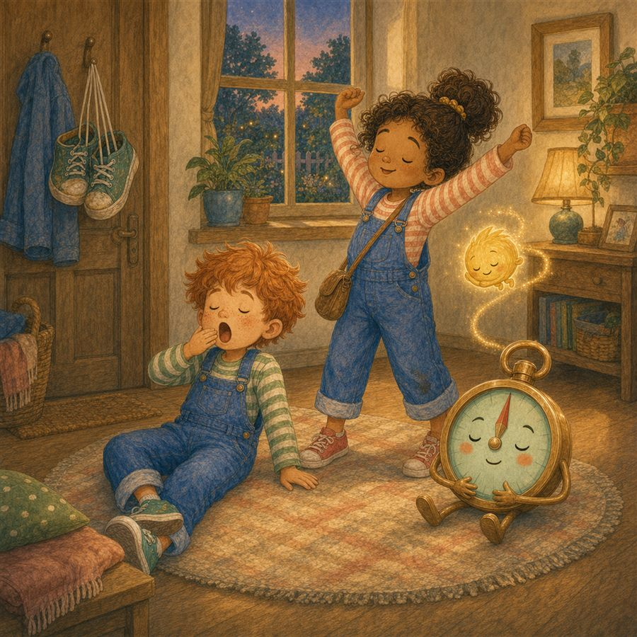
Am Abend hingen die Turnschuhe müde an der Tür, und im Garten wurde es still. Noah gähnte. Mira streckte sich. Und Flitz? Flitz leuchtete nur noch ganz sanft, wie ein kleines Nachtlicht.
„Morgen bewegen wir uns wieder", sagte Calli leise. „Rennen?", fragte Noah. „Vielleicht." „Tanzen?", fragte Mira. „Bestimmt."
„Und Pausen?", gähnte Flitz. „Auch die", sagte Calli. „Ganz bestimmt."
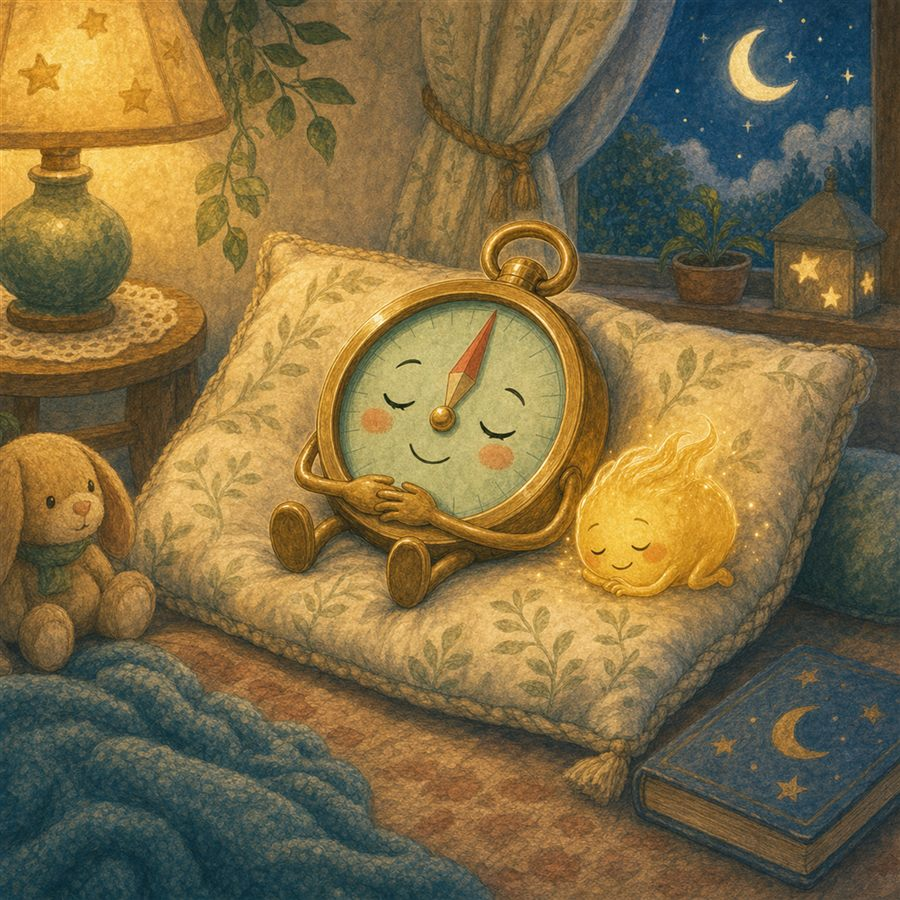
Calli klappte seine Nadel ein. Nicht ganz. Nur ein bisschen. Denn ein guter Kompass schläft nie völlig ein. Er ruht nur. Für morgen.
Und falls dein Zappelmotor dir morgen wieder in die Beine kribbelt, dann weißt du jetzt: Das ist kein Fehler. Das ist Energie. Lass sie raus, hab Freude — und ruh dich danach gut aus.
Ganz leise sagt Calli: „Erst bewegen. Dann ausruhen. Und immer freundlich mit dir bleiben."